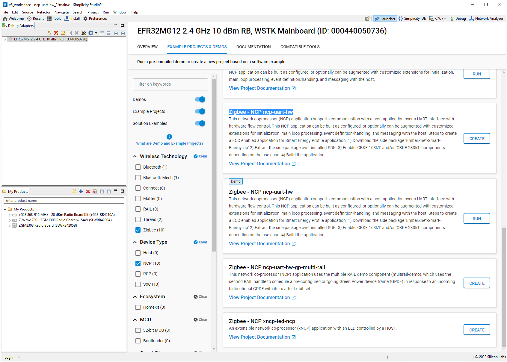
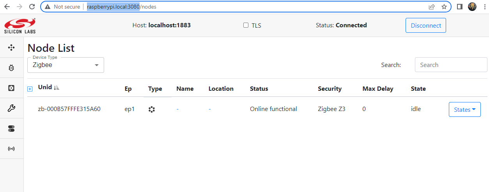

Zigbee (ZigPC)
Introduction
Here we explain how to get up and running quickly to test out Unify on the Raspberry Pi reference platform for Zigbee devices.
Prerequisites
Zigbee module EFR32MG2X/EFR32xG22 radio board on Wireless STK
Unify installed on Raspberry Pi (as described here)
Simplicity Studio software
Load NCP Firmware
Program the WSTK with the Zigbee NCP firmware (ncp-uart-hw) using Simplicity Studio 
Click create to generate a project
In the project we need to adjust the value of EMBER_ADDRESS_TABLE_SIZE to be 32

Build and load the firmware
Connect Wireless STK (WSTK) board
First make sure ZigPC is not running
pi@raspberrypi:~ $ sudo systemctl stop uic-zigpc
Connect the WSTK to the USB port of the Raspberry Pi
Configure ZigPC
Set the USB serial device for ZigPC to /dev/ttyACM0. Use the following command or edit /etc/uic/uic.cfg.
pi@raspberrypi:~ $ sudo dpkg-reconfigure uic-zpc
Start ZigPC
Start ZigPC
pi@raspberrypi:~ $ sudo systemctl start uic-zigpc
Verify it is running using the following command
pi@raspberrypi:~ $ sudo systemctl status uic-zigpc
Check the log for errors
pi@raspberrypi:~ $ journalctl -u uic-zigpc
Connect to Unify UI
Launch a web browser and connect to http://raspberrypi.local:3080
In the top right of the UI enter “localhost” and port 1883, then click “Connect” 